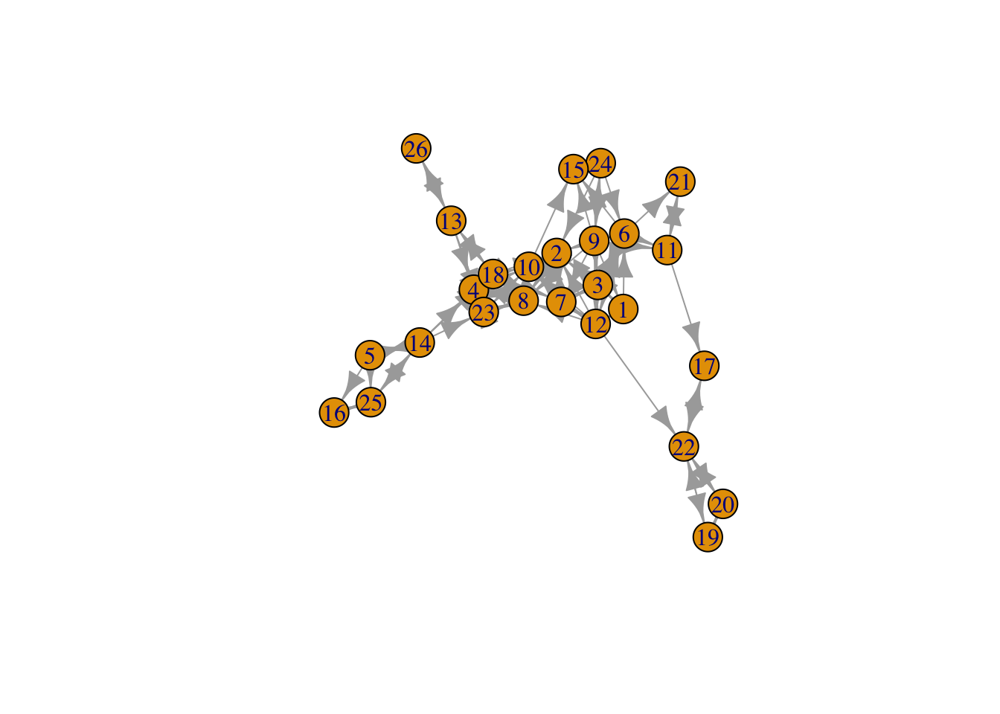
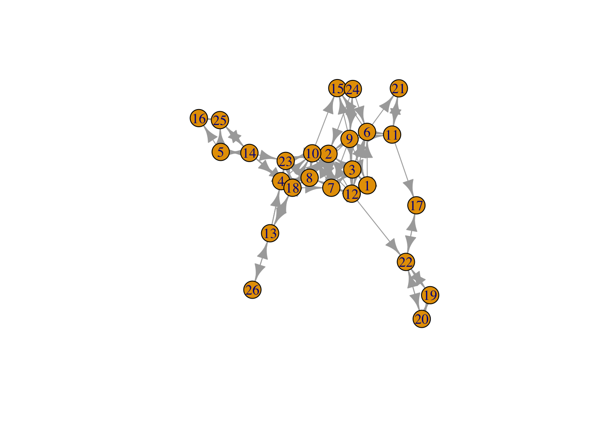
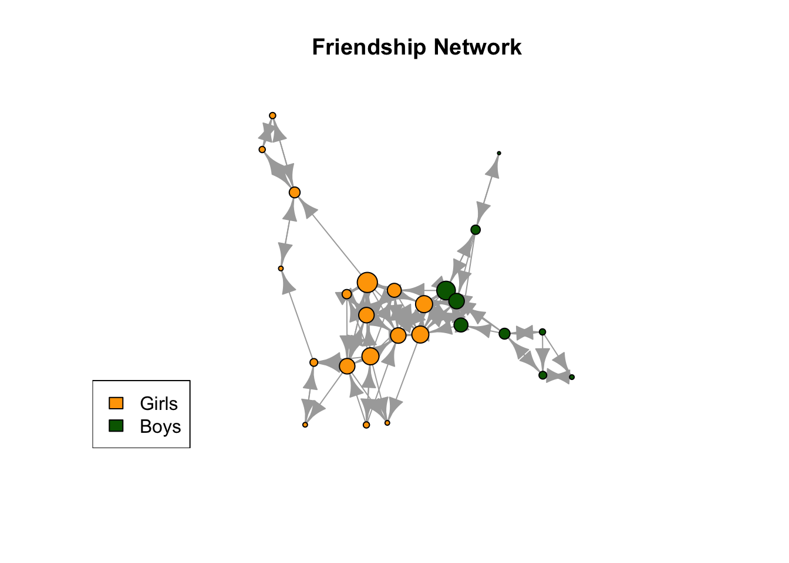
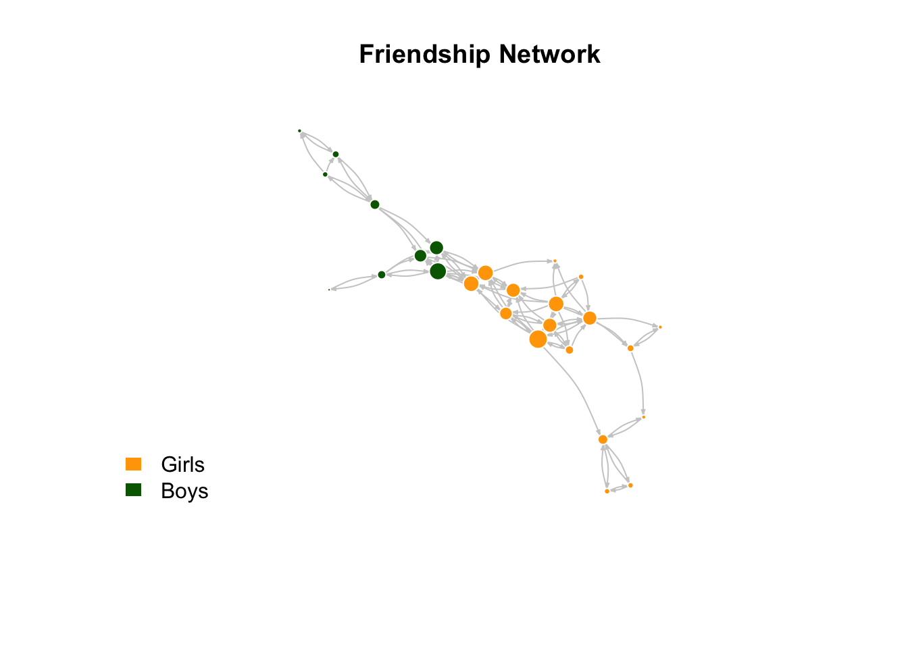

Tutorial3_Knecht data
Zeyu(Zey)
2026-04-30
1 R Markdown
This is an R Markdown document. Markdown is a simple formatting syntax for authoring HTML, PDF, and MS Word documents. For more details on using R Markdown see http://rmarkdown.rstudio.com.
When you click the Knit button a document will be generated that includes both content as well as the output of any embedded R code chunks within the document. You can embed an R code chunk like this:
summary(cars)## speed dist
## Min. : 4.0 Min. : 2.00
## 1st Qu.:12.0 1st Qu.: 26.00
## Median :15.0 Median : 36.00
## Mean :15.4 Mean : 42.98
## 3rd Qu.:19.0 3rd Qu.: 56.00
## Max. :25.0 Max. :120.002 Including Plots
You can also embed plots, for example:

Note that the echo = FALSE parameter was added to the
code chunk to prevent printing of the R code that generated the
plot.
3 3.1 A first look at the data
Load packages
library(igraph)
library(haven) # to read Stata files
library(reshape2)
library(tidyverse)Read data
PupilsWaveV <- read_dta(file = "PupilsWaveV.dta")QUESTION: Have a close look at these two variables, comparing the namenr values for different classes (just eyeballing the data should be sufficient). What do you notice?
2-level data?
#select only one class
class12b <- PupilsWaveV %>%
filter(schoolnr == "12b") # keep only one class4 3.2 Assignment
1.
f_elist_from_12b <- class12b
f_elist_from_12b <- select(f_elist_from_12b, namenr, friend1:friend12) # keep only the network variables (and id)
f_elist_from_12b <- melt(f_elist_from_12b, id.vars = "namenr") # from the reshape2 package
f_elist_from_12b## namenr variable value
## 1 1 friend1 12
## 2 2 friend1 10
## 3 3 friend1 2
## 4 4 friend1 18
## 5 5 friend1 14
## 6 6 friend1 15
## 7 7 friend1 2
## 8 8 friend1 10
## 9 9 friend1 24
## 10 10 friend1 8
## 11 11 friend1 21
## 12 12 friend1 1
## 13 13 friend1 26
## 14 14 friend1 23
## 15 15 friend1 NA
## 16 16 friend1 25
## 17 17 friend1 22
## 18 18 friend1 4
## 19 19 friend1 20
## 20 20 friend1 22
## 21 21 friend1 11
## 22 22 friend1 17
## 23 23 friend1 4
## 24 24 friend1 6
## 25 25 friend1 16
## 26 26 friend1 13
## 27 1 friend2 3
## 28 2 friend2 7
## 29 3 friend2 6
## 30 4 friend2 23
## 31 5 friend2 16
## 32 6 friend2 3
## 33 7 friend2 3
## 34 8 friend2 4
## 35 9 friend2 15
## 36 10 friend2 2
## 37 11 friend2 17
## 38 12 friend2 3
## 39 13 friend2 4
## 40 14 friend2 18
## 41 15 friend2 NA
## 42 16 friend2 NA
## 43 17 friend2 NA
## 44 18 friend2 23
## 45 19 friend2 22
## 46 20 friend2 19
## 47 21 friend2 NA
## 48 22 friend2 19
## 49 23 friend2 8
## 50 24 friend2 2
## 51 25 friend2 14
## 52 26 friend2 NA
## 53 1 friend3 6
## 54 2 friend3 8
## 55 3 friend3 7
## 56 4 friend3 8
## 57 5 friend3 25
## 58 6 friend3 12
## 59 7 friend3 12
## 60 8 friend3 18
## 61 9 friend3 3
## 62 10 friend3 15
## 63 11 friend3 NA
## 64 12 friend3 7
## 65 13 friend3 18
## 66 14 friend3 4
## 67 15 friend3 NA
## 68 16 friend3 NA
## 69 17 friend3 NA
## 70 18 friend3 10
## 71 19 friend3 NA
## 72 20 friend3 NA
## 73 21 friend3 NA
## 74 22 friend3 20
## 75 23 friend3 10
## 76 24 friend3 9
## 77 25 friend3 NA
## 78 26 friend3 NA
## 79 1 friend4 NA
## 80 2 friend4 NA
## 81 3 friend4 12
## 82 4 friend4 10
## 83 5 friend4 NA
## 84 6 friend4 21
## 85 7 friend4 10
## 86 8 friend4 23
## 87 9 friend4 1
## 88 10 friend4 23
## 89 11 friend4 NA
## 90 12 friend4 6
## 91 13 friend4 23
## 92 14 friend4 25
## 93 15 friend4 NA
## 94 16 friend4 NA
## 95 17 friend4 NA
## 96 18 friend4 2
## 97 19 friend4 NA
## 98 20 friend4 NA
## 99 21 friend4 NA
## 100 22 friend4 NA
## 101 23 friend4 18
## 102 24 friend4 NA
## 103 25 friend4 NA
## 104 26 friend4 NA
## 105 1 friend5 NA
## 106 2 friend5 NA
## 107 3 friend5 1
## 108 4 friend5 NA
## 109 5 friend5 NA
## 110 6 friend5 11
## 111 7 friend5 NA
## 112 8 friend5 NA
## 113 9 friend5 2
## 114 10 friend5 NA
## 115 11 friend5 NA
## 116 12 friend5 2
## 117 13 friend5 NA
## 118 14 friend5 5
## 119 15 friend5 NA
## 120 16 friend5 NA
## 121 17 friend5 NA
## 122 18 friend5 13
## 123 19 friend5 NA
## 124 20 friend5 NA
## 125 21 friend5 NA
## 126 22 friend5 NA
## 127 23 friend5 NA
## 128 24 friend5 NA
## 129 25 friend5 NA
## 130 26 friend5 NA
## 131 1 friend6 NA
## 132 2 friend6 NA
## 133 3 friend6 NA
## 134 4 friend6 NA
## 135 5 friend6 NA
## 136 6 friend6 NA
## 137 7 friend6 NA
## 138 8 friend6 NA
## 139 9 friend6 7
## 140 10 friend6 NA
## 141 11 friend6 NA
## 142 12 friend6 8
## 143 13 friend6 NA
## 144 14 friend6 NA
## 145 15 friend6 NA
## 146 16 friend6 NA
## 147 17 friend6 NA
## 148 18 friend6 8
## 149 19 friend6 NA
## 150 20 friend6 NA
## 151 21 friend6 NA
## 152 22 friend6 NA
## 153 23 friend6 NA
## 154 24 friend6 NA
## 155 25 friend6 NA
## 156 26 friend6 NA
## 157 1 friend7 NA
## 158 2 friend7 NA
## 159 3 friend7 NA
## 160 4 friend7 NA
## 161 5 friend7 NA
## 162 6 friend7 NA
## 163 7 friend7 NA
## 164 8 friend7 NA
## 165 9 friend7 11
## 166 10 friend7 NA
## 167 11 friend7 NA
## 168 12 friend7 22
## 169 13 friend7 NA
## 170 14 friend7 NA
## 171 15 friend7 NA
## 172 16 friend7 NA
## 173 17 friend7 NA
## 174 18 friend7 7
## 175 19 friend7 NA
## 176 20 friend7 NA
## 177 21 friend7 NA
## 178 22 friend7 NA
## 179 23 friend7 NA
## 180 24 friend7 NA
## 181 25 friend7 NA
## 182 26 friend7 NA
## 183 1 friend8 NA
## 184 2 friend8 NA
## 185 3 friend8 NA
## 186 4 friend8 NA
## 187 5 friend8 NA
## 188 6 friend8 NA
## 189 7 friend8 NA
## 190 8 friend8 NA
## 191 9 friend8 6
## 192 10 friend8 NA
## 193 11 friend8 NA
## 194 12 friend8 10
## 195 13 friend8 NA
## 196 14 friend8 NA
## 197 15 friend8 NA
## 198 16 friend8 NA
## 199 17 friend8 NA
## 200 18 friend8 NA
## 201 19 friend8 NA
## 202 20 friend8 NA
## 203 21 friend8 NA
## 204 22 friend8 NA
## 205 23 friend8 NA
## 206 24 friend8 NA
## 207 25 friend8 NA
## 208 26 friend8 NA
## 209 1 friend9 NA
## 210 2 friend9 NA
## 211 3 friend9 NA
## 212 4 friend9 NA
## 213 5 friend9 NA
## 214 6 friend9 NA
## 215 7 friend9 NA
## 216 8 friend9 NA
## 217 9 friend9 12
## 218 10 friend9 NA
## 219 11 friend9 NA
## 220 12 friend9 NA
## 221 13 friend9 NA
## 222 14 friend9 NA
## 223 15 friend9 NA
## 224 16 friend9 NA
## 225 17 friend9 NA
## 226 18 friend9 NA
## 227 19 friend9 NA
## 228 20 friend9 NA
## 229 21 friend9 NA
## 230 22 friend9 NA
## 231 23 friend9 NA
## 232 24 friend9 NA
## 233 25 friend9 NA
## 234 26 friend9 NA
## 235 1 friend10 NA
## 236 2 friend10 NA
## 237 3 friend10 NA
## 238 4 friend10 NA
## 239 5 friend10 NA
## 240 6 friend10 NA
## 241 7 friend10 NA
## 242 8 friend10 NA
## 243 9 friend10 8
## 244 10 friend10 NA
## 245 11 friend10 NA
## 246 12 friend10 NA
## 247 13 friend10 NA
## 248 14 friend10 NA
## 249 15 friend10 NA
## 250 16 friend10 NA
## 251 17 friend10 NA
## 252 18 friend10 NA
## 253 19 friend10 NA
## 254 20 friend10 NA
## 255 21 friend10 NA
## 256 22 friend10 NA
## 257 23 friend10 NA
## 258 24 friend10 NA
## 259 25 friend10 NA
## 260 26 friend10 NA
## 261 1 friend11 NA
## 262 2 friend11 NA
## 263 3 friend11 NA
## 264 4 friend11 NA
## 265 5 friend11 NA
## 266 6 friend11 NA
## 267 7 friend11 NA
## 268 8 friend11 NA
## 269 9 friend11 NA
## 270 10 friend11 NA
## 271 11 friend11 NA
## 272 12 friend11 NA
## 273 13 friend11 NA
## 274 14 friend11 NA
## 275 15 friend11 NA
## 276 16 friend11 NA
## 277 17 friend11 NA
## 278 18 friend11 NA
## 279 19 friend11 NA
## 280 20 friend11 NA
## 281 21 friend11 NA
## 282 22 friend11 NA
## 283 23 friend11 NA
## 284 24 friend11 NA
## 285 25 friend11 NA
## 286 26 friend11 NA
## 287 1 friend12 NA
## 288 2 friend12 NA
## 289 3 friend12 NA
## 290 4 friend12 NA
## 291 5 friend12 NA
## 292 6 friend12 NA
## 293 7 friend12 NA
## 294 8 friend12 NA
## 295 9 friend12 NA
## 296 10 friend12 NA
## 297 11 friend12 NA
## 298 12 friend12 NA
## 299 13 friend12 NA
## 300 14 friend12 NA
## 301 15 friend12 NA
## 302 16 friend12 NA
## 303 17 friend12 NA
## 304 18 friend12 NA
## 305 19 friend12 NA
## 306 20 friend12 NA
## 307 21 friend12 NA
## 308 22 friend12 NA
## 309 23 friend12 NA
## 310 24 friend12 NA
## 311 25 friend12 NA
## 312 26 friend12 NAf_elist_from_12b <- f_elist_from_12b%>%
filter(!is.na(value)) %>% # drop the missings
rename(from ="namenr", to = "value", sourcevar= "variable") %>% #just nice for interpretation
relocate(to, .after=from) #move around the columns
f_elist_from_12b## from to sourcevar
## 1 1 12 friend1
## 2 2 10 friend1
## 3 3 2 friend1
## 4 4 18 friend1
## 5 5 14 friend1
## 6 6 15 friend1
## 7 7 2 friend1
## 8 8 10 friend1
## 9 9 24 friend1
## 10 10 8 friend1
## 11 11 21 friend1
## 12 12 1 friend1
## 13 13 26 friend1
## 14 14 23 friend1
## 15 16 25 friend1
## 16 17 22 friend1
## 17 18 4 friend1
## 18 19 20 friend1
## 19 20 22 friend1
## 20 21 11 friend1
## 21 22 17 friend1
## 22 23 4 friend1
## 23 24 6 friend1
## 24 25 16 friend1
## 25 26 13 friend1
## 26 1 3 friend2
## 27 2 7 friend2
## 28 3 6 friend2
## 29 4 23 friend2
## 30 5 16 friend2
## 31 6 3 friend2
## 32 7 3 friend2
## 33 8 4 friend2
## 34 9 15 friend2
## 35 10 2 friend2
## 36 11 17 friend2
## 37 12 3 friend2
## 38 13 4 friend2
## 39 14 18 friend2
## 40 18 23 friend2
## 41 19 22 friend2
## 42 20 19 friend2
## 43 22 19 friend2
## 44 23 8 friend2
## 45 24 2 friend2
## 46 25 14 friend2
## 47 1 6 friend3
## 48 2 8 friend3
## 49 3 7 friend3
## 50 4 8 friend3
## 51 5 25 friend3
## 52 6 12 friend3
## 53 7 12 friend3
## 54 8 18 friend3
## 55 9 3 friend3
## 56 10 15 friend3
## 57 12 7 friend3
## 58 13 18 friend3
## 59 14 4 friend3
## 60 18 10 friend3
## 61 22 20 friend3
## 62 23 10 friend3
## 63 24 9 friend3
## 64 3 12 friend4
## 65 4 10 friend4
## 66 6 21 friend4
## 67 7 10 friend4
## 68 8 23 friend4
## 69 9 1 friend4
## 70 10 23 friend4
## 71 12 6 friend4
## 72 13 23 friend4
## 73 14 25 friend4
## 74 18 2 friend4
## 75 23 18 friend4
## 76 3 1 friend5
## 77 6 11 friend5
## 78 9 2 friend5
## 79 12 2 friend5
## 80 14 5 friend5
## 81 18 13 friend5
## 82 9 7 friend6
## 83 12 8 friend6
## 84 18 8 friend6
## 85 9 11 friend7
## 86 12 22 friend7
## 87 18 7 friend7
## 88 9 6 friend8
## 89 12 10 friend8
## 90 9 12 friend9
## 91 9 8 friend10f_from_12b <- graph_from_data_frame(f_elist_from_12b) #This is a proper igraph graph object
plot(f_from_12b)
2.
is_directed(f_from_12b)## [1] TRUE3.
node_attrs <- class12b %>%
select(namenr, sex) %>%
distinct()
f_from_12b <- graph_from_data_frame(
d = f_elist_from_12b,
vertices = node_attrs,
directed = TRUE
)
vertex_attr_names(f_from_12b)## [1] "name" "sex"unique(V(f_from_12b)$sex)## <labelled<double>[2]>: sex of respondent
## [1] 1 2
##
## Labels:
## value label
## 1 female
## 2 maleplot(f_from_12b)
4.
#Density
edge_density(f_from_12b)## [1] 0.14#0.14
#Number of components
count_components(f_from_12b)## [1] 1#1
#The diameter
diameter(f_from_12b)## [1] 7#7
#The average shortest path length
mean_distance(f_from_12b)## [1] 2.853598#2.853598
#Clustering Coefficient
transitivity(f_from_12b, type="average")## [1] 0.5886984#0.58869845.
deg <- degree(f_from_12b)
sex <- V(f_from_12b)$sex
deg_girls <- deg[sex == 1]
deg_boys <- deg[sex == 2]
mean(deg_girls)## [1] 7.294118mean(deg_boys)## [1] 6.444444t.test(deg_girls, deg_boys, alternative = "greater")##
## Welch Two Sample t-test
##
## data: deg_girls and deg_boys
## t = 0.6062, df = 16.934, p-value = 0.2762
## alternative hypothesis: true difference in means is greater than 0
## 95 percent confidence interval:
## -1.589172 Inf
## sample estimates:
## mean of x mean of y
## 7.294118 6.444444#Although girls have a slightly higher mean degree (7.29) than boys (6.44), the difference is not statistically significant (Welch t-test, t = 0.61, df = 16.93, p = 0.276). Therefore, we fail to reject the null hypothesis that girls have higher degree than boys in this network.6.
deg <- degree(f_from_12b)
sex <- V(f_from_12b)$sex
vertex_colors <- ifelse(sex == 1, "orange", "darkgreen")
plot(f_from_12b,
vertex.size = deg,
vertex.color = vertex_colors,
vertex.label = NA,
main = "Friendship Network")
legend("bottomleft",
legend = c("Girls", "Boys"),
fill = c("orange", "darkgreen"))
# a better-looking graph advised by AI
plot(f_from_12b,
vertex.size = deg * 0.8,
vertex.color = vertex_colors,
vertex.label = NA,
vertex.frame.color = "white",
edge.arrow.size = 0.2,
edge.color = "gray80",
edge.curved = 0.2,
layout = layout_with_fr,
main = "Friendship Network")
legend("bottomleft",
legend = c("Girls", "Boys"),
fill = c("orange", "darkgreen"),
border = NA,
bty = "n") 